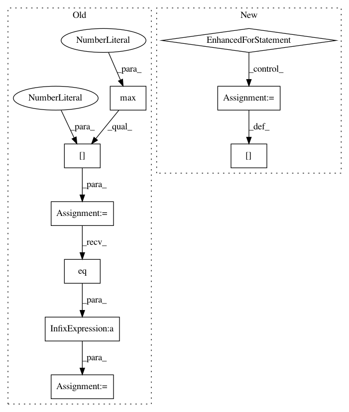

db28ee240981457335c6fd9c38e542066df214cb,examples/cluster_gcn.py,,test,#,59
Before Change
logits = model(data.x, data.edge_index)
accs = []
for _, mask in data("train_mask", "val_mask", "test_mask"):
pred = logits[mask].max(1)[1]
acc = pred.eq(data.y[mask]).sum().item() / mask.sum().item()
accs.append(acc)
return accs
After Change
def test():
model.eval()
total_correct, total_nodes = [0, 0, 0], [0, 0, 0]
for data in test_loader:
data = data.to(device)
logits = model(data.x, data.edge_index)
pred = logits.argmax(dim=1)
masks = [data.train_mask, data.val_mask, data.test_mask]
for i, mask in enumerate(masks):
total_correct[i] += (pred[mask] == data.y[mask]).sum().item()
total_nodes[i] += mask.sum().item()
return (torch.Tensor(total_correct) / torch.Tensor(total_nodes)).tolist()
for epoch in range(1, 31):
In pattern: SUPERPATTERN
Frequency: 3
Non-data size: 9
Instances
Project Name: rusty1s/pytorch_geometric
Commit Name: db28ee240981457335c6fd9c38e542066df214cb
Time: 2020-02-19
Author: matthias.fey@tu-dortmund.de
File Name: examples/cluster_gcn.py
Class Name:
Method Name: test
Project Name: rusty1s/pytorch_geometric
Commit Name: e6484cd61d31a38f96729a70c1f461fc18b3d8ce
Time: 2017-11-08
Author: matthias.fey@tu-dortmund.de
File Name: examples/mnist_grid.py
Class Name:
Method Name: train
Project Name: rusty1s/pytorch_geometric
Commit Name: c6349f5f1a8955419d396c7ac74f782f6f00a443
Time: 2017-11-03
Author: matthias.fey@tu-dortmund.de
File Name: examples/mnist_superpixel_75.py
Class Name:
Method Name: train